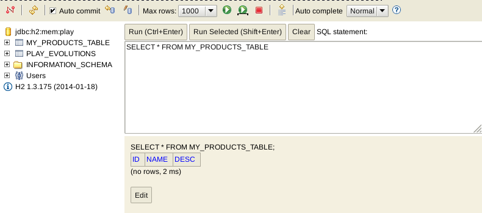
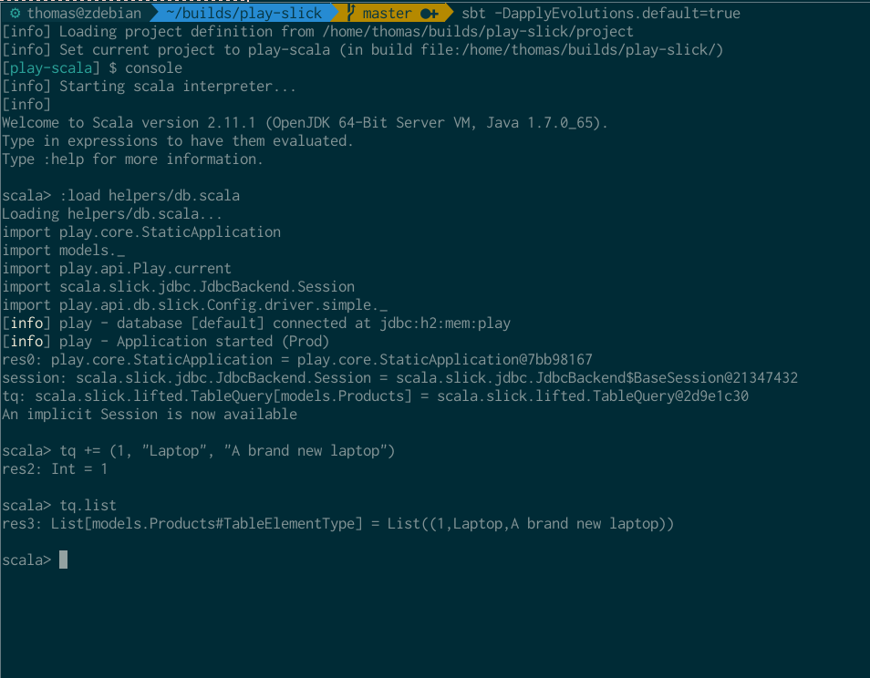

(Note: I do not plan to work any more on this post. I will probably rewrite it for Slick 3 when I find the time.)
As I wanted to get started with Slick, I faced a problem every Slick padawan faces: the almost complete lack of resources. There’s a rather confusing Activator tutorial, some docs, the generated ScalaDoc, and Adam Mackler’s Learning Slick. But that’s it. And I found neither of those to be particulary easy to read.
But the situation is improving, the official docs now mostly contain everything you should now, though there is no real “path” to follow, and you can’t possibly learn it all in one go. Play will probably bring an influx of new Slick users, which will help with the ecosystem.
Here’s my try at a easy to follow tutorial that will help you to get started with Slick. Be sure to leave any comments, remarks… Pull requests are also much appreciated!
There’s a number of links to the Slick source code. Since most of them refer to line numbers, I linked to the state of a specific commit on GitHub, so we’re both looking at the same thing, even when the code is updated.
This post focuses mainly on using Slick with Play!2.0
Getting set up
I mainly want to learn Slick to use it with Play!2. This guide will work with Play too, because it includes everything you need to get started (it starts the H2 database in memory, shows when your database needs to evolve with the SQL that will be run, it automatically generates those evolutions, an easy way to start the H2 web viewer, etc.). Keep in mind that I’m still learning, I may make mistakes in these recipes, or just be plain wrong.
Here’s how you get ready:
- Install Typesafe Activator
- Optional but recommended: add Activator to your
PATH - Start Activator UI (with
activator ui, orpath/to/activator/bin/activator uiif you didn’t add it to your path, or by clicking on theactivator.batfile if you’re on Windows) and create a new project using the “Play Scala Seed” - Configure your
application.conf: enable the default H2 in-memory database, and add or uncomment this line:slick.default="models.*" - Add the following lines to your
build.sbt(not all of them are needed for all of the recipes here):
"com.typesafe.slick" %% "slick" % "2.1.0",
"com.typesafe.play" %% "play-slick" % "0.8.0",
"com.h2database" % "h2" % "1.3.175",
"mysql" % "mysql-connector-java" % "5.1.21"
You should now reload the project.
Creating a simple table
Let’s say we have a simple need: we want to create a table that tracks products. Each product has an ID, name and a description.
A class for our product would look like this:
case class Product(id: Long, name: String, description: String)
How do we get from a case class to the database?
package models
import play.api.db.slick.Config.driver.simple._
class Products(tag: Tag) extends Table[(Long, String, String)](tag, "MY_PRODUCTS_TABLE") {
def id = column[Long]("ID", O.PrimaryKey)
def name = column[String]("NAME")
def description = column[String]("DESC")
def * = (id, name, description)
}
That’s our basic table. It represents a table in our database. Let’s go over this:
- Since we’re working with the Play Framework, we place models in the
modelspackage - We create a new class that inherits from Table, with a type parameter
(Long, String, String). The type paramter is used to indicate what kind of data we want to store. - For every column we want to create, we make a method. As we have an id of type Long on our case class, we use
def id = column[Long]("ID", O.PrimaryKey). The type parameter here obviously defines what kind of data we want to store. Possible values are Byte, Short, Int, Long, BigDecimal, Float, Double, Boolean, java.sql.Date, java.sql.Timestamp, and some more types. You can find a list here, under the heading Tables. Then comes the name we want for the column in the database, and finally the options we want. Here, the name of the column is “ID”, and this column will be a primary key. - There’s a method called
*(pronounced “star”), this is the “star projection”. Every table needs this. It’s defined on AbstractTable, and it must match the row type (type parameter of theTableclass).
If you run your Play app, you should see this (if you don’t, check your application.conf: did you uncomment all the database lines, did you add slick.default="models.*"?):

Slick generated the following SQL from our Table:
create table "MY_PRODUCTS_TABLE" ("ID" BIGINT NOT NULL PRIMARY KEY,"NAME" VARCHAR NOT NULL,"DESC" VARCHAR NOT NULL)
Clicking on “Apply this script now!” will run that script against the database. You can stop Play and open the H2 web viewer by typing h2-browser on the sbt/activator console. If you then apply your script, you’ll see a new table in there:

Keep in mind that you won’t see anything in the H2 browser if you’re doing things in the Scala REPL, because that starts a seperate H2 instance.
Using case classes instead of tuples
For now, we’ve created Table[T]s with a tuple as the type argument. That tuple can be converted to a class, but then we’d have to do that manually. Fortunately, we can also parameterize Table[T] with a class:
case class Product(id: Long, name: String, description: String)
class Products(tag: Tag) extends Table[Product](tag, "MY_PRODUCTS_TABLE") {
def id = column[Long]("ID", O.PrimaryKey)
def name = column[String]("NAME")
def description = column[String]("DESC")
def * = (id, name, description) <> (Product.tupled, Product.unapply _)
}
The only things we changed were the type argument (Table[(Long, String, String)] to Table[Product]) and the star projection (def * = (id, name, description) to def * = (id, name, description) <> (Product.tupled, Product.unapply _)).
The <> method is used to map the star projection to a custom entity type. For now, you can just remember that you can use a case class as the Table[T] type parameter as long as you use <> to map the tuple to that case class.
Intermezzo: tupled and unapply with case classes
When we started using case classes instead of tuples, we used two new methods, tupled and unapply. What’s up with them?
case class Product(id: Long, name: String, description: String)
Remember that we can create new instances of a case class like this (you don’t need to use new):
scala> Product(1, "Laptop", "A brand new laptop")
res0: Product = Product(1,Laptop,A brand new laptop)
Also remember that this is actually sugar for calling the apply method:
scala> Product.apply(1, "Laptop", "A brand new laptop")
res1: Product = Product(1,Laptop,A brand new laptop)
unapply sounds like it’s the inverse of apply. It’s defined on the companion object of the case class:
scala> Product.unapply(res1)
res2: Option[(Long, String, String)] = Some((1,Laptop,A brand new laptop))
Hmm, we got back an Option of a triple (Tuple3). The tripled is wrapped in an Option for the reason defined here (“[…] If it returns a single sub-value of type T, return an Option[T]“). tupled goes the other way around: it takes a Tuple3 and constructs a Product for us. This method is also defined on the companion object:
scala> Product.tupled (2,"Desktop", "A new desktop")
res3: Product = Product(2,Desktop,A new desktop)
The following is only logical then:
scala> val product = Product(1, "Laptop", "A brand new laptop")
product: Product = Product(1,Laptop,A brand new laptop)
scala> product == Product.tupled(Product.unapply(product).get)
res4: Boolean = true
Simple table CRUD
Relevant documentation on queries
We now have a simple table, but what can we do with it? You might notice there’s no methods for data alteration on the Table class. Indeed, for data operations, we need an instance of TableQuery.
val tq = TableQuery[Products] // with Products being the Table[Product] we defined earlier
We’ll start with the easiest methods available on tq.
tq.list
tq.insert(Product(1, "Laptop", "A brand new laptop"))
tq.filter(id === 1)
tq.filter(id === 1).update(row => (row.name, row.description).update("Desktop", "A brand new desktop"))
tq.delete
tq.filter(id === 1).delete
tq.map(_.id.toUpperCase).run
tq.length.run
If you want to follow along interactively, see the section “Slick from the REPL”.
Listing all entries (SELECT)
There’s a method list on TableQuery[T] we can use to “list” everything in the database.
scala> tq.list
res0: List[models.Products#TableElementType] = List()
Currently, there’s nothing in there. If you run the examples in the next section, you should see something like this:
scala> tq.list
res1: List[models.Products#TableElementType] = List(Product(1,Laptop,A brand new laptop), Product(2,Eggs,A carton of eggs), Product(3,Bike,A red bike))
Inserting a new entry (INSERT)
If you thought listing was easy, wait until you see inserting!
Inserting a single thing
There are multiple ways to insert things into our table:
scala> tq.insert(Product(1, "Laptop", "A brand new laptop"))
res2: Int = 1
Here, we inserted a tuple using insert. We can verify this with what we learned in the previous step:
scala> tq.list
res3: List[models.Products#TableElementType] = List(Product(1,Laptop,A brand new laptop))
Don’t mind the return type. What matters is that the insert succeeded. Another way to insert is to use the += method, which looks more natural:
scala> tq += Product(2, "Eggs", "A carton of eggs")
res4: Int = 1
The += method just performs an insert under the hood, as proven by this line in JdbcInsertInvokeComponent.scala:
final def += (value: U)(implicit session: Backend#Session): SingleInsertResult = insert(value)
But look at res2 and res1: insert gave us back something, an Int.
To find out what this Int means, we’ll dig a little. Your bet is probably on “number of inserted rows”, and to spoil the fun, you’d be right. If your not interested in this little detour, you can just skip ahead to the next section.
In the definition of += above, where we see it calls insert, we also see that it returns a SingleInsertResult. This type, described as “The result type when inserting a single value” in the documentation, is defined here, but there’s no implementation. If I understand this, that’s up to a specific driver to choose a type to return for an insert.
On trait CountingInsertInvokerDef in JdbcInsertInvokerComponent, SingleInsertResult is defined as an Int, and CountingInsertInvokerDef is described as “An InsertInvoker that returns the number of affected rows.”. You might be wondering how it arrives at that specific InsertInvoker, if you also took a look at the source, you’d see there are multiple XxxInsertInvokers. The answer is the type InsertInvoker[T], “The type of insert invokers returned by the driver”, which is set to JdbcDriver.CountingInsertInvokerDef[T] (the description is in the docs, I assume inherited from BasicInsertInvokerComponent since it’s not annotated in the docs - no idea ScalaDoc did this).
Inserting multiple things at once
There’s also a ++= operator, which allows us to insert multiple things all at once:
scala> tq ++= List(Product(3, "Bike", "A red bike"), Product(4, "Milk", "A gallon of milk"))
res5: Option[Int] = Some(2)
This time, we don’t get an Int, but an Option[Int] back. I don’t know why it’s wrapped in Option, I’m guessing some drivers don’t support multiple insert?
Searching entries (SELECT WHERE)
Now that we have seen how we can select all things in our database, it’s time to see how we can filter them. Of course, we could work directly on the result:
scala> tq.list
res0: List[models.Products#TableElementType] = List(Product(1,Laptop,A brand new laptop), Product(2,Eggs,A carton of eggs), Product(3,Bike,A red bike), Product(4,Milk,A gallon of milk))
scala> res0.filter(_.id > 2)
res1: List[models.Products#TableElementType] = List(Product(3,Bike,A red bike), Product(4,Milk,A gallon of milk))
But that’s not a good idea: imagine if this table had tens of thousands of products in it: a list of tens of thousands of products would be returned by the database, and our program would have to sort through them. What a waste, we can offload this task to the database!
To do that, instead of list, call filter on tq:
scala> tq.filter(_.id > 2L)
res2: scala.slick.lifted.Query[models.Products,models.Products#TableElementType,Seq] = scala.slick.lifted.WrappingQuery@78d5a6ec
Since we defined id as a Long, we need to compare it with a Long, you’ll get an error otherwise. You maybe expected to get back a list of products with an id bigger than 2. But instead, we got back a WrappingQuery! What’s going on?
Slick wants to avoid making trips to the database, because that’s expensive. Instead, it tries combine as much as it can into a query. We can explicitely tell it to run the query with run:
scala> tq.filter(_.id > 2L).run
res3: Seq[models.Products#TableElementType] = Vector(Product(3,Bike,A red bike), Product(4,Milk,A gallon of milk))
Now we get what we expected! The reason we didn’t have to run our earlier queries is because they were “complete”, what more can you do with an INSERT INTO? You can’t add a GROUP BY or WHERE, it’s a complete statement and Slick will go ahead and run it, saving you some typing. list, you may say, isn’t complete, I still could add some clauses to that in SQL! That’s true, but since getting everything from a table is so common, list will return immediately. If you want to do a WHERE, you use filter directly on the TableQuery[T]. If you want to do a GROUP BY, you use groupBy.
NOTE paragraph above doesn’t seem to be fully true: groupBy doesn’t need run either. TODO: investigate
You can compose filters:
scala> tq.filter(_.id > 1L).filter(_.id < 4L)
res4: scala.slick.lifted.Query[models.Products,models.Products#TableElementType,Seq] = scala.slick.lifted.WrappingQuery@446bd64a
scala> tq.filter(_.id > 1L).filter(_.id < 4L).run
res5: Seq[models.Products#TableElementType] = Vector(Product(2,Eggs,A carton of eggs), Product(3,Bike,A red bike))
If you want to know what query Slick will run, you can invoke selectStatement instead of run:
scala> tq.filter(_.id > 1L).filter(_.id < 4L).selectStatement
res6: String = select x2."ID", x2."NAME", x2."DESC" from "MY_PRODUCTS_TABLE" x2 where (x2."ID" > 1) and (x2."ID" < 4)
That looks pretty clean!
What if we want an exact match? We want the product with id 2:
scala> tq.filter(_.id == 2L)
<console>:19: error: inferred type arguments [Boolean] do not conform to method filter's type parameter bounds [T <: scala.slick.lifted.Column[_]]
tq.filter(_.id == 2L)
^
<console>:19: error: type mismatch;
found : models.Products => Boolean
required: models.Products => T
tq.filter(_.id == 2L)
^
<console>:19: error: Type T cannot be a query condition (only Boolean, Column[Boolean] and Column[Option[Boolean]] are allowed
tq.filter(_.id == 2L)
This is because we forgot we’re not working on real Scala collection. We’re working with Slick here. Slick merely provides a collection-like API, that it then translates into SQL queries. To do that, it “lifts” types, you should read about that here first. The take-away is that you can’t use == because Slick can’t override that, instead you should use === (and =!= instead of !=):
scala> tq.filter(_.id === 2L).run
res7: Seq[models.Products#TableElementType] = Vector(Product(2,Eggs,A carton of eggs))
scala> tq.filter(_.id =!= 2L).run
res8: Seq[models.Products#TableElementType] = Vector(Product(1,Laptop,A brand new laptop), Product(3,Bike,A red bike), Product(4,Milk,A gallon of milk))
Selecting certain columns (SELECT …, …)
When you only need certain columns, you can use map. Say we want a list of all the identifiers:
scala> tq.map(_.id).run
res9: Seq[Long] = Vector(1, 2, 3, 4)
Multiple columns are just as easy, but we can’t use placeholder syntax:
scala> tq.map(row => (row.name, row.description)).run
res10: Seq[(String, String)] = Vector((Laptop,A brand new laptop), (Eggs,A carton of eggs), (Bike,A red bike), (Milk,A gallon of milk))
Updating entries (UPDATE)
For updating, we first need to select the columns we want to update with map (we’ll run into primary key violations otherwise), then provide a new value for those columns with update:
scala> tq.map(_.description).update("My new description")
res11: Int = 4
scala> tq.list
res12: List[models.Products#TableElementType] = List(Product(1,Laptop,My new description), Product(2,Eggs,My new description), Product(3,Bike,My new description), Product(4,Milk,My new description))
…And it might be a good idea to filter which rows we want to update first:
scala> tq.filter(_.id === 3L).map(_.description).update("A red bike")
res13: Int = 1
Take a moment to appreciate how nice this looks!
Deleting entries (DELETE and DELETE WHERE)
delete drops rows from the database:
scala> tq.delete
res88: Int = 4
Woops. Just as with update, we might want to specify which rows, otherwise it goes ahead and deletes all of them:
scala> tq ++= List(Product(1,"Laptop","A brand new laptop"), Product(2,"Eggs","A carton of eggs"), Product(3,"Bike","A red bike"), Product(4,"Milk","A gallon of milk"))
res14: Option[Int] = Some(4)
scala> tq.filter(_.id <= 2L).delete
res15: Int = 2
scala> tq.filter(_.name === "bike").delete
res16: Int = 0
scala> tq.filter(_.name === "Bike").delete
res17: Int = 1
Take a good look at res16 and res17: filtering is case sensitive! If you’ve worked with SQL before, this may surprise you. You can do a case insenstive match by using toLowerCase on the column (see also this anwer):
scala> tq.filter(_.name.toLowerCase === "milk").delete
res18: Int = 1
This method is not the toLowerCase you know and love, but an imposter defined here. Remember that we’re working with lifted types (Rep[T]), and that all operations on them happen in the database. Comparing is obvious, but other not all operations are. Slick provides support for a lot of operations with a class called StringColumnExtensionMethods. Remember that if you need to perform an operation on a String (or rather, Rep[String])!
Methods on columns
As mentioned in the previous paragraph, not all string operations are possible on a string column (Rep[String]), this because not all databases support all of the function Scala has for strings. Those that are, get translated into SQL functions, and are thus performed in the database.
scala> tq.map(_.name.toUpperCase).selectStatement
res19: String = select {fn ucase(x2."NAME")} from "MY_PRODUCTS_TABLE" x2
You can view all extension methods, as they are called, here. It’s definitely worth a quick glance.
Listing the number of entries (COUNT(*))
length shows the number of rows in a table:
scala> tq.length.run
res20: Int = 4
scala> tq.filter(_.id > 2L).length.run
res21: Int = 2
Inspecting generated SQL
Finally, now that we’ve seen all these ways to create queries, we can inspect the SQL that Slick generates:
scala> tq.selectStatement
res30: String = select x2."ID", x2."NAME", x2."DESC" from "MY_PRODUCTS_TABLE" x2
scala> tq.filter(_.id > 2L).filter(_.name.reverseString === "kliM").map(_.description.toLowerCase).selectStatement
res31: String = select {fn lcase(x2."DESC")} from "MY_PRODUCTS_TABLE" x2 where (x2."ID" > 2) and (reverse(x2."NAME") = 'kliM')
Similary, we have insertStatement, updateStatement, deleteStatement:
scala> tq.insertStatement
res32: String = insert into "MY_PRODUCTS_TABLE" ("ID","NAME","DESC") values (?,?,?)
scala> tq.updateStatement
res33: String = update "MY_PRODUCTS_TABLE" set "ID" = ?, "NAME" = ?, "DESC" = ?
scala> tq.filter(_.id === 3L).map(row => row.name).updateStatement
res34: String = update "MY_PRODUCTS_TABLE" set "NAME" = ? where "MY_PRODUCTS_TABLE"."ID" = 3
scala> tq.deleteStatement
res35: String = delete from "MY_PRODUCTS_TABLE"
Slick from the REPL
When on the Play sbt/activator console, you can start an interactive Scala REPL console in the context of your current application by typing the command console. When starting a REPL, you first need to start your application and use a Session provider to be able to use the database.
import play.core.StaticApplication
new StaticApplication(new java.io.File("."))
This starts the application on the console. If you get messages about evolutions, run sbt with -DapplyEvolutions.default=true (see also this blog post).
Now, grab a Session:
import models._, play.api.Play.current, scala.slick.jdbc.JdbcBackend.Session, play.api.db.slick.Config.driver.simple._
play.api.db.slick.DB.withSession {implicit session: Session =>
// your code
}
Or create a new session and pass that every time you need it (you don’t want to use that wrapper all the time in the REPL!):
val session = play.api.db.slick.DB.createSession
TableQuery[Products].list(session) // example usage
TableQuery[Products].insert((1, "name", "description"))(session) // example insert
Since the session can be passed as an implicit val, we can also do this, and avoid passing it altogether:
implicit val session = play.api.db.slick.DB.createSession
TableQuery[Products].list // example usage
TableQuery[Products].insert(1, "name", "description") // example insert
Loading a helper from the REPL
Typing all of this into the REPL gets tiring, so one last thing to make our lives easier: we’ll create a Scala script and load it from the Scala REPL.
import play.core.StaticApplication, models._, play.api.Play.current, scala.slick.jdbc.JdbcBackend.Session, play.api.db.slick.Config.driver.simple._
try {
new StaticApplication(new java.io.File("."))
} catch {
case e: play.api.db.evolutions.InvalidDatabaseRevision => {
println("\n\n\n WARNING: You should run sbt with the -DapplyEvolutions.default=true switch to automatically apply evolutions!")
println("Currently, the database is in an invalid state, so queries won't work.")
}
case e : Throwable => throw e;
}
implicit val session = play.api.db.slick.DB.createSession
val tq = TableQuery[Products]
println("An implicit Session is now available")
I saved it as db.scala in a folder helpers in my project root. You can now use the REPL’s special :load command to load it:

Classes you’ll meet
The Table class
The TableQuery class
The ProvenShape class
The Rep class
The big O
Remember how we used O.PrimaryKey to set a field as a primary key? That O is defined here and contains some more interesting things for JdbcProfile (official documentation here, scroll down a little):
O.PrimaryKey: non-compound primary keyO.Default[T](defaultValue: T): set a default valueO.DBType(dbType: String): use a custom database type (e.g.DBType("VARCHAR(20)"))O.AutoInc: automatically increment this fieldO.NotNull: this field may not be nullO.Nullable: this field may be null
Note on O.NotNull and O.Nullable: you should usually not specify these. Slick will use nullable database fields by default if you use an Option type.
Auto-increment
We don’t always want to provide primary keys ourselves. Here, we want to save stores, but we’d rather have the database set the id:
case class Store(id: Long, name: String)
class Stores(tag: Tag) extends Table[Store](tag, "STORES") {
def id = column[Long]("id", O.PrimaryKey, O.AutoInc)
def name = column[String]("name")
def * = (id, name) <> (Store.tupled, Store.unapply _)
}
We just give the id the AutoInc option. If we insert a Store, we can see the database sets the id:
scala> TableQuery[Stores] += Store(666, "Eurostock")
res0: Int = 1
scala> TableQuery[Stores].list
res1: List[models.Stores#TableElementType] = List(Store(1,Eurostock))
Note that the id we provided ourselves (666) gets ignored, erased if you will, and the database sets a new one.
That’s not really kosher, we need to set an id that’s non-sensical, since it gets overwritten by the database. It would be much nicer if we could make this explicit in the type system. We’ll start with a new class that tracks locations:
case class Location(id: Long = None, address: String)
It tracks locations with an id. Since we want this id to be set by the database, we’ll make it an Option:
case class Location(id: Option[Long] = None, address: String)
We would like to our table to look like this:
class Locations(tag: Tag) extends Table[Location](tag, "LOCATIONS") {
def id = column[Long]("id", O.PrimaryKey, O.AutoInc)
def address = column[String]("address")
def * = ???
}
So we save locations with an id None, and the database will generate an id. In case we insert a location with an id of Some(x), it will be ignored and a new one will be generated. When we get data from the database, we want it to be of the correct type (Location), with the id being Some(x). We can do that without a lot of pain, we define the * projection as
def * = (id.?, address) <> (Location.tupled, Location.unapply _)
Note id.?: this method is defined on PlainColumnExtensionMethods and is used for Option types in the * projection.
Now everything works as expected: we can pass in ids of None and we get back Locations with an id of Some(x)!
scala> TableQuery[Locations] += Location(None, "21 Jump Street")
res2: Int = 1
scala> TableQuery[Locations].list
res3: List[models.Locations#TableElementType] = List(Location(Some(1),21 Jump Street))
Multiple primary keys
You can use the primaryKey method in your Table definition to define multiple primary keys, the syntax is:
def pk = primaryKey("pk_name_here", (someColumn, anotherColumn, oneMoreForGoodMeasure))
Mapping columns
As mentioned before, you can’t store arbritrary types in the database. Those that can’t be saved have to be mapped either as a table (classes) or to other types. You can map a column using MappedColumnType.
Let’s say we want to track events. We want to keep track of the id, description and timestamp of the event. The timestamp keeps track of when the event happened:
case class Event(id: Long, description: String, timestamp: java.util.Date)
class Events(tag: Tag) extends Table[Event](tag, "EVENTS") {
def id = column[Long]("id", O.PrimaryKey)
def description = column[String]("description")
def timestamp = column[java.util.Date]("timestamp")
def * = (id, description, timestamp) <> (Event.tupled, Event.unapply _)
}
This won’t work, java.util.Date isn’t a type you can persist. So we’ll write a mapper from java.util.Date to java.sql.Timestamp. java.util.Date cannot be directly persisted in the database, so we “map” it to a type that can (and stores the same kind of data), java.sql.Timestamp. We could also have mapped the date to a Long, or to a String, but a timestamp is what we want.
implicit val javaUtilDateMapper = MappedColumnType.base[java.util.Date, java.sql.Timestamp] (
d => new java.sql.Timestamp(d.getTime),
d => new java.sql.Date(d.getTime)
)
- We define this as an
implicit val. This will allows us to ignore this is a mapped column for all practical purposes. - The name we give this
valdoesn’t matter, but well-named things are nice - We call the factory method
MappedColumnType.base[T,U](tmap: T => U, tcomap: U => T).Tis the type we want to use externally, in this case,java.util.Date.Uis what we want the database to use, here:java.sql.Timestamp. Then cometmapandtcomap, which are functions that define how to convert fromTtoUand back. - We pass the conversion functions as anonymous functions.
We’ll place this implicit in the table. The full code now looks like:
case class Event(id: Long, description: String, timestamp: java.util.Date)
class Events(tag: Tag) extends Table[Event](tag, "EVENTS") {
implicit val javaUtilDateMapper = MappedColumnType.base[java.util.Date, java.sql.Timestamp] (
d => new java.sql.Timestamp(d.getTime),
d => new java.sql.Date(d.getTime)
)
def id = column[Long]("id", O.PrimaryKey)
def description = column[String]("description")
def timestamp = column[java.util.Date]("timestamp")
def * = (id, description, timestamp) <> (Event.tupled, Event.unapply _)
}
We can confirm this works:
scala> val ev = TableQuery[Events]
ev: scala.slick.lifted.TableQuery[models.Events] = scala.slick.lifted.TableQuery@626bcfa6
scala> ev += Event(1, "Mainframe is down", new java.util.Date)
res1: Int = 1
scala> ev.list
res2: List[models.Events#TableElementType] = List(Event(1,Mainframe is down,2015-01-26))
scala> res2(0).timestamp
res3: java.util.Date = 2015-01-26
We pass in java.util.Dates and get back java.util.Dates, while not thinking about how it’s saved in the database!
Using Global.scala to inject sample data
- Enable Global.scala in
application.scala - Override
def onStart(app: Application)